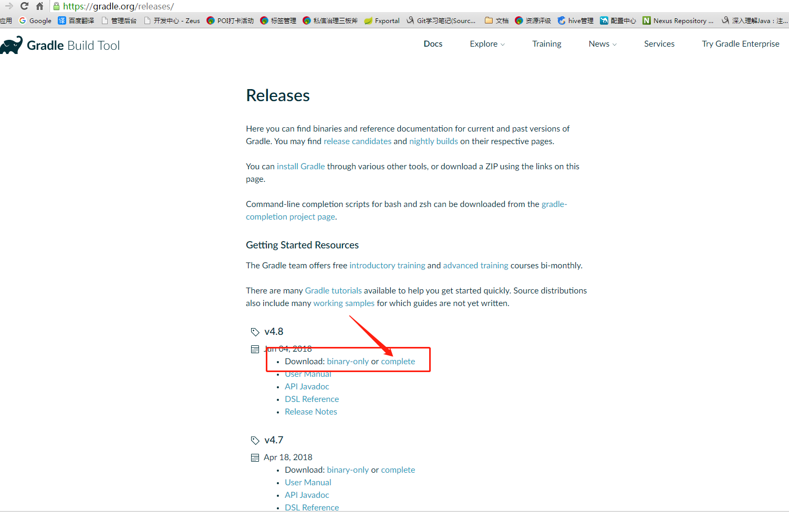
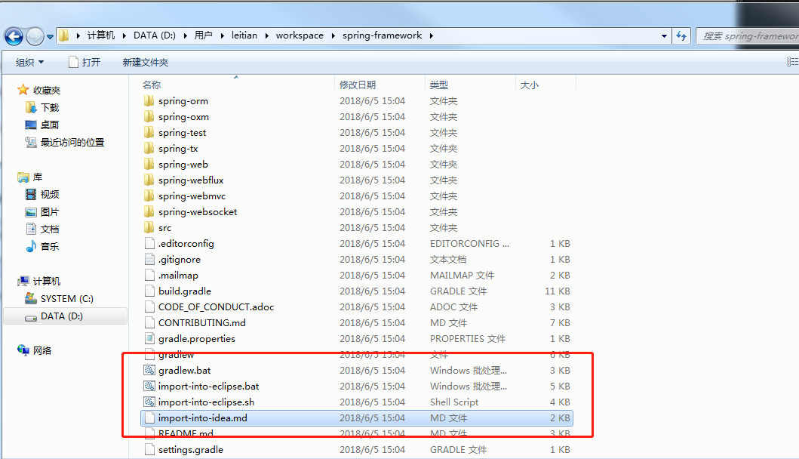
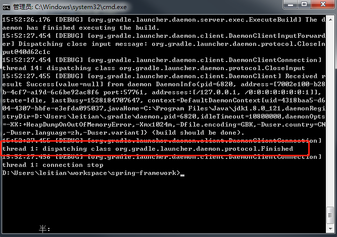
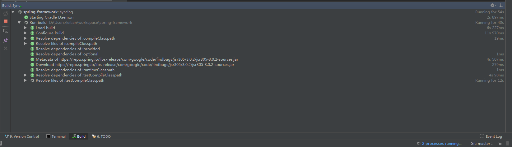
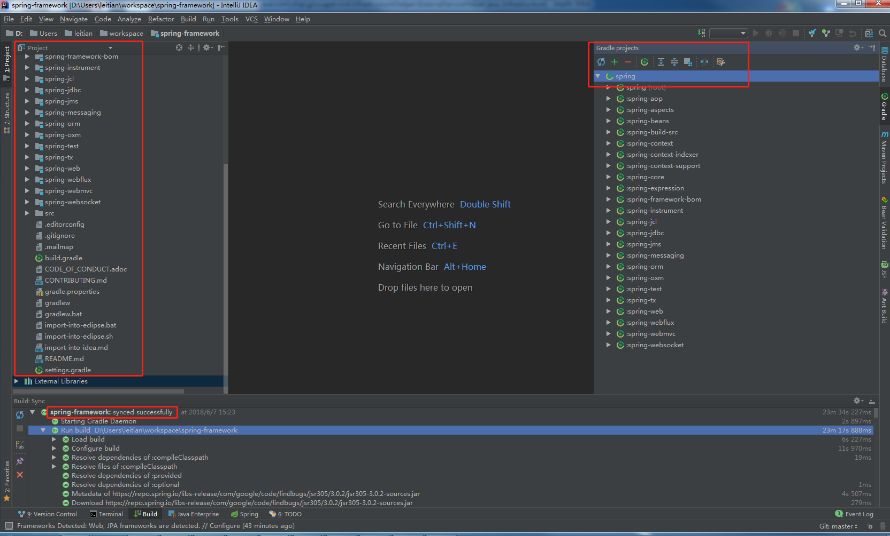

下载spring源码
Spring源码现在在github中，因此需要先安装git(具体下载安装git就自行百度)，现在假设已经安装好git并且设置好了用户名和邮箱，使用下面的命令：1
git clone git://github.com/SpringSource/Spring-framework.git
下载gradle
Gradle下载地址

配置：
1、创建系统环境变量：GRADLE_HOME gradle指定目录,eg:D:\software\gradle\gradle-4.8\bin
2、path：;%GRADLE_HOME%
（Linux环境请添加到.bash_profile中
3、配置好了后打开cmd，输入gradle -v看是否成功
编译
安装好Gradle之后就可以根据步骤进行编译了。
最好将jdk版本升级到1.8，因为编译项目的时候有一个-XX:MaxMetaspaceSize=1024m的参数需要jdk1.8才支持，否则会报错。
spring目录中：import-into-eclipse.*是导入Eclipse的脚本，点击运行之后会有提示。
因为我用的是idea，因此需要使用import-into-idea.md，最后一个文件是文本文件，打开之后会发现这是一个指导用户怎么编译的说明（这是一个用markdown语法写的文件）。

打开cmd，cd到spring源码目录中，使用命令：gradlew.bat cleanIdea :spring-oxm:compileTestJava。耐心等待。1
gradlew.bat cleanIdea :spring-oxm:compileTestJava

导入IDEA
打开IDEA，File->New->Project From Existing Sources…，选中Spring-framework文件夹，OK->Import project from external model，选中Gradle，点击Next，然后点击Finish，
等待IDEA导入即可。
gradle开始编译：

gradle编译结束：

spring-framework
如果你嫌上面的步骤麻烦，或者你就是单纯只想运行spring编译好的源码，可以直接下载：
链接：https://pan.baidu.com/s/10x3X4rFooLbzFxLs6e2MwQ
密码：xpz2